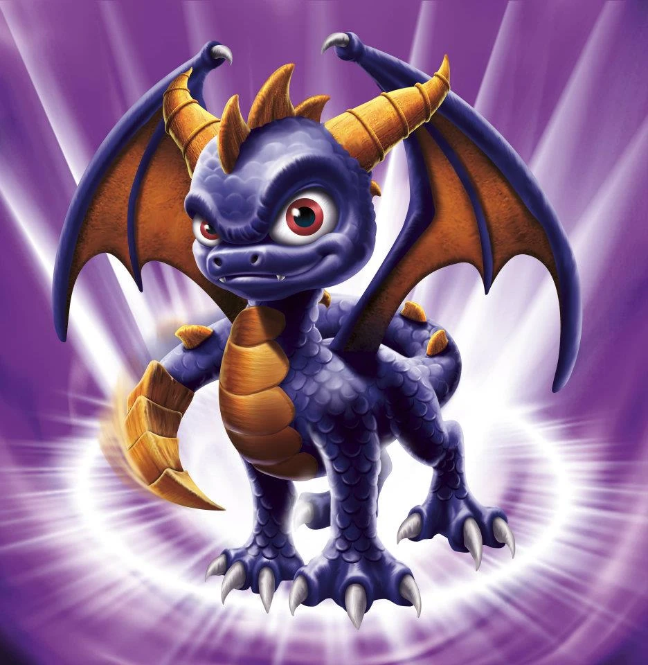
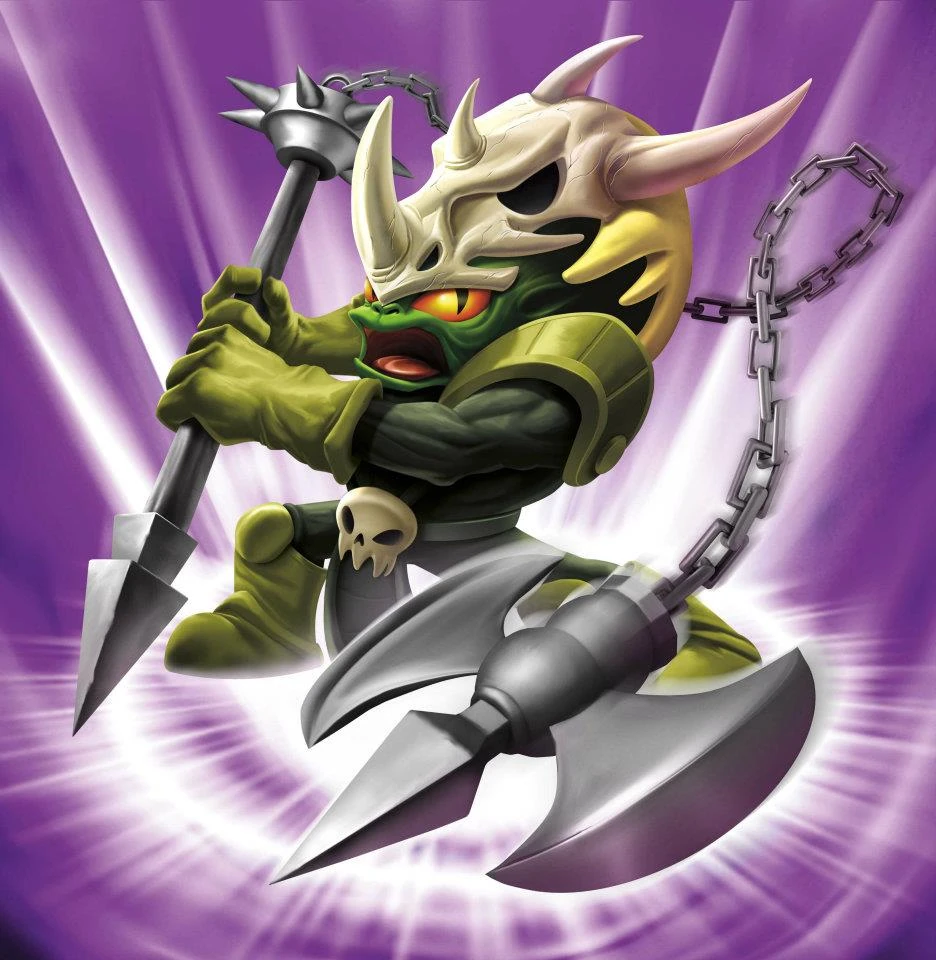
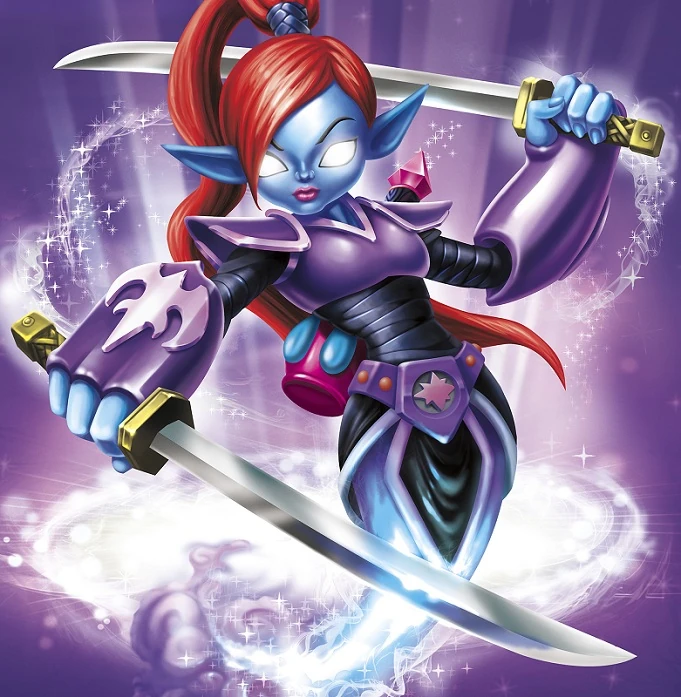
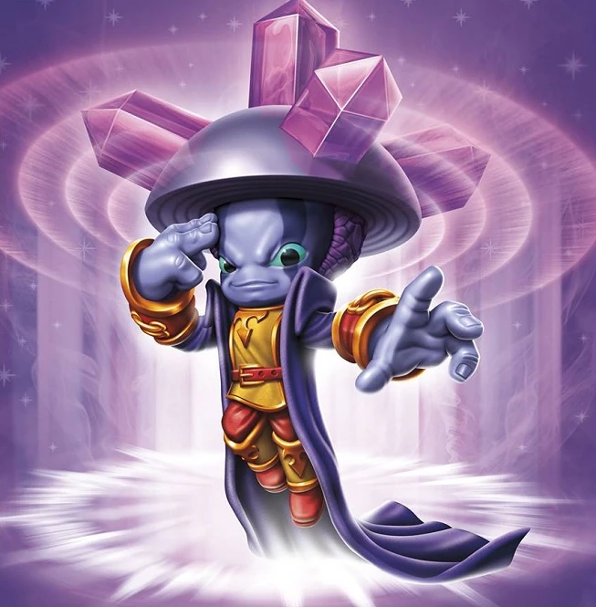
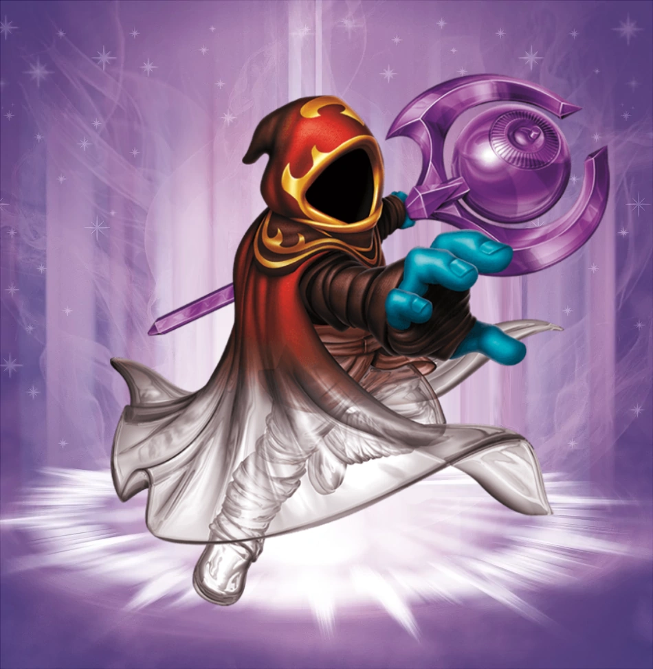
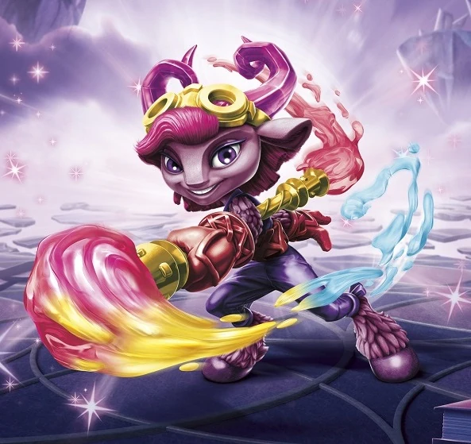
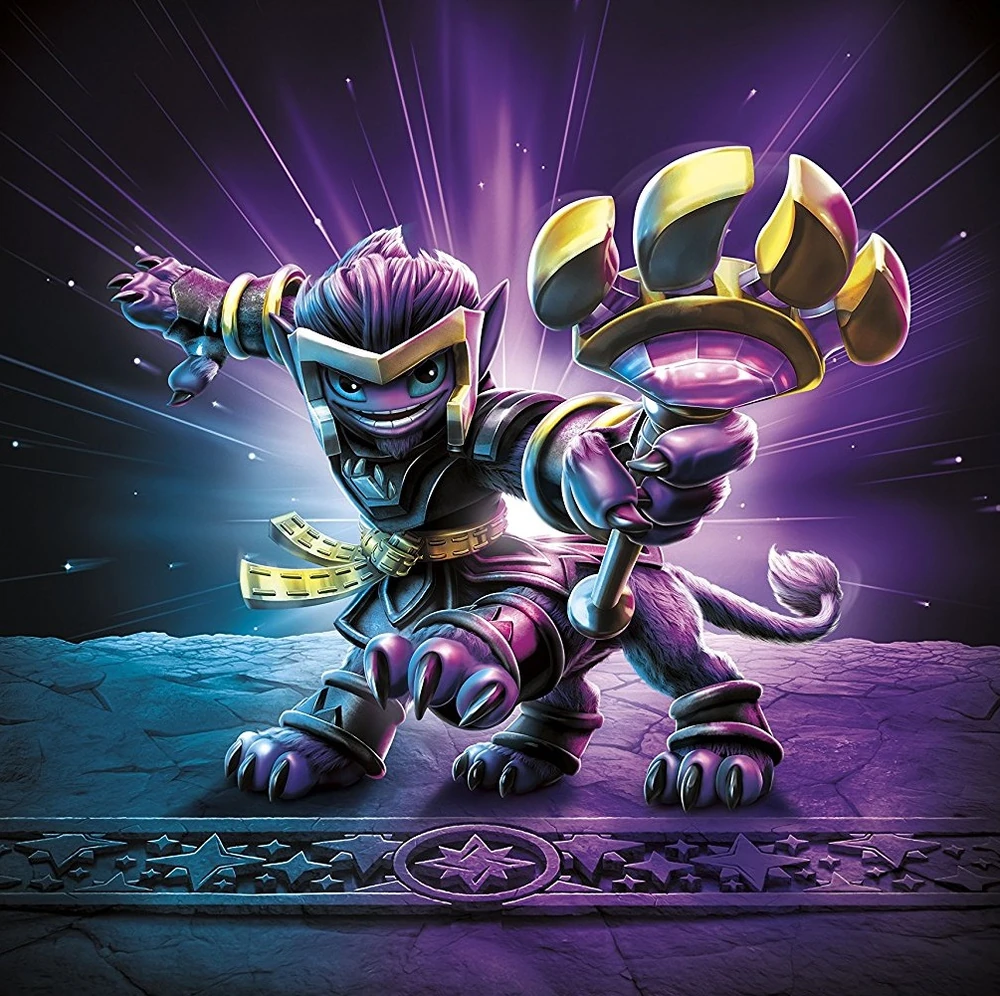
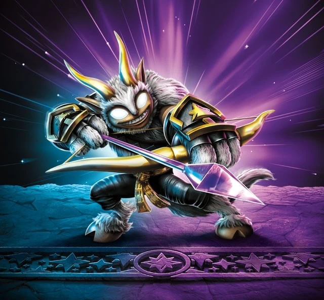
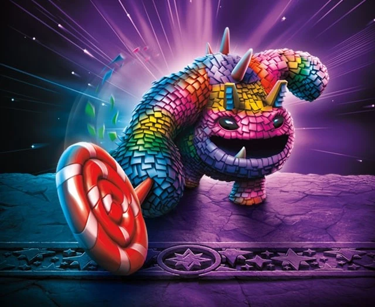

Spyro
Spyro hails from a rare line of magical purple dragons that come from a faraway land few have ever traveled. It's been said that the Scrolls of the Ancients mention Spyro prominently -- the old Portal Masters having chronicled his many exciting adventures and heroic deeds. Finally, it was Master Eon himself who reached out and invited him to join the Skylanders. Now calling Skylands his home, Spyro remains one of its most valued protectors, with evil facing a new enemy -- and the Skylanders gaining a valued ally.

Voodood
Voodood was a brave warrior among his people. During his rite of passage as a young orc, he entered the Cave of Trials to prove his worth. It was there he found much more than expected. Lured by a brilliant light, Voodood discovered the skeleton of an enormous dragon with an ornate axe buried where the heart would have been. The village was astonished when he exited the cave holding the legendary Axe Reaver and wearing the dragon skull on his head. Voodood quickly became warrior leader and defended his homeland from many beasts and invaders... until he was the last of his tribe. Soon after, he joined the Skylanders.
Double Trouble
Double Trouble was an adept spellcaster. On an expedition to find exotic ingredients for his potions, he traveled in search of a rare lily that was said to multiply the power of any spell. So thrilled was he when he found it, Double Trouble instantly ate the plant and performed a spell. Suddenly, there was a loud pop… then another… and another – until Double Trouble was surrounded by exact copies of himself. As it turned out, he had misunderstood the details about exactly what would multiply. But it didn’t matter, for he quickly realized the clones were delightful companions… never mind that they were only half his size and would explode on contact.
Wrecking Ball
Wrecking Ball was once a tiny grub worm about to become the main ingredient in an old wizard’s cauldron of magic stew. But when he was dropped in, the wizard was shocked to see the little grub devour all of the soup and emerge from the cauldron 20 times larger and with a long, sticky tongue. The poor old wizard was even more surprised seconds later, when Wrecking Ball proceeded to swallow him whole. Eventually he ran, quite literally, into the powerful Portal Master Eon, who was intrigued by how he came to be and impressed with his unique abilities.

Ninjini
Ninjini was the most renowned magical ninja from ancient times, long before the Arkeyans rose to power. But a dark sorceress, who was jealous of Ninjini's skill as a warrior, trapped her within an enchanted bottle to be imprisoned for all of eternity. Time stretched on, yet Ninjini remained steadfast and determined to escape - even mastering the dual sword technique within the solitude of her bottle. Over the years, her strength continued to grow until alas, through sheer force of will, she broke free! From that moment on, Ninjini made it her mission to help those in need as one of the first Skylanders, always carrying that enchanted bottle as a reminder of her own resilience.
Pop Fizz
Nobody is quite sure who Pop Fizz was before he became an alchemist, least of all Pop Fizz himself. After many years of experimenting with magical potions, his appearance has changed quite significantly. In fact, no one even knows his original colour. But it’s widely known that he is a little crazy, his experiments are reckless, and the accidents they cause are too numerous to measure. Understandably, he has had a difficult time finding lab partners, or anyone that even wants to be near him. In hopes of making himself more appealing to others, he attempted to create the most effective charm potion ever — but that just turned him into a big, wild, berserker. Or maybe that’s just how he saw the potion working in the first place...
Trap Shadow
Once part of an elite tribe of hunters in a remote area of Skylands, Trap Shadow used his cat-like cunning, ingenious traps and mystical stealth abilities to catch nearly everything that could be caught. As a result, his fame around Skylands grew so much that it attracted the attention of an evil cadre of wizards. They plotted to capture Trap Shadow and use his abilities to ensnare the most uncatchable thing of all - Master Eon himself. But Trap Shadow could sense them coming from miles away. Outsmarted and outmaneuvered, each of the wizards was easily captured by Trap Shadow's bewildering array of traps and snares until they were all locked away for good. Having saved Master Eon, he quickly made Trap Shadow a Skylander.
Hoot Loop
Hoot Loop was raised by a guild of magicians in Skylands’ most famous traveling circus. At a young age, he perfected illusions and spells that only the very best of their guild could perform, and even mastered the art of teleportation! Soon enough, he became the star of the show, known far and wide as the Amazing Hoot Loop. However, one day an army of Greebles disguised as clowns invaded, determined to destroy the popular circus. It was then that Hoot Loop gave a performance that few would ever forget. Using his incredible powers, he fought off the invaders and saved the circus - to the raucous applause of the many spectators – including Master Eon, who presented Hoot Loop with an opportunity to learn some real magic as a member of the Skylanders.
Dune Bug
Hailing from a race of beetles changed by the powerful secrets hidden in a buried Arkeyan city, Dune Bug was next in line to become the defender of those secrets. As a small pupa, Dune Bug and his father would travel to the ruins where he learned to read the ancient writings using his father's magic staff. On the day Dune Bug was to be given his own magic staff, the city fell under attack by the evil Sand Mages of Doom, who were after the secret Arkeyan tomes. Knowing what he had to do, Dune Bug used his magic to defeat the Mages and bury the city deeper into the ground until it was forever out of their reach. Dune Bug earned his magic staff that day - and a place alongside the Skylanders.
Star Strike
Looking for a way to magically banish the Skylanders, Kaos poured through every dusty scroll and ancient tome he could find. Upon stumbling across a rare and extremely powerful spell, he began to recite its words. However, he sneezed midway through the incantation. As a result, instead of sending the Skylanders far away, Star Strike was plucked from her home in the distant cosmos and brought into Skylands. Surprised, Kaos thought he’d won a powerful new ally in the mysterious and reserved Star Strike. But she knew evil when she saw it and promptly unleashed her fierce magical powers on him. Word of her victory over Kaos spread quickly and she was soon asked by Master Eon to join the Skylanders.

Blastermind
Blastermind was once the "hide and sheep" champion of the Sardonic Mountains, where he and his friends played regularly. But when he was about to set a new Skylands record, the ground collapsed and Blastermind fell into a deep, mysterious cavern filled with shimmering crystals. As his friends circled the hole up top, they suddenly found themselves face to face with a dangerous Ham Dragon, who had felt the rumble of the collapse. Down below, Blastermind felt helpless. But fortunately, the cavern was filled with Psionic Power Crystals once used by the Ancients to amplify their thoughts. When the crystals "heard" Blastermind’s worried thoughts about saving his friends, they found him worthy – and bestowed upon him awesome psionic powers, which he used to get out of the hole and mentally blast the circling Ham Dragon. Soon after, Blastermind joined the Skylanders as part of the Trap Team, using his new Traptanium Psionic Helmet to fight evil everywhere!

Enigma
Summoned by a Mabu Mystic, Enigma comes from a nameless place "between the worlds." Though the Mystic was really just looking for someone to play Skystones, he was quickly enraptured by Enigma's stories about his mysterious homeland. Unfortunately, the Darkness got wind of these stories, and seeking another realm to conquer, sent minions to lay siege on the gateway that remained open. Making matters worse, the Mabu had no idea how to close it. So, with a legion of minions fast approaching, Enigma chose to use his Sigil of Mystery to seal the doorway – cutting him off from his home forever. This large sacrifice caught the attention of the Trap Team, who welcomed Enigma and gave him a new home as a protector of Skylands. He now uses his Traptanium Sigil to put a world of hurt on evil everywhere!
Deja Vu
On a remote island in Skylands, Déjà Vu tirelessly worked on a machine that would make the perfect three-minute egg in half the time. After pouring over countless magic tomes, and even consulting the lost plans used to create the legendary Tower of Time, she finally completed construction of the huge machine. Unfortunately, a gang of evil giant sea slugs, searching for a way to acquire super speed, learned of her machine and set about to take it at all costs. Slow, but well armed, the massive slugs bore down on the island. But rather than allow her work be used for evil, Déjà Vu quickly jumped into action and set the clock’s hands to thirteen – causing a time overload. Caught up in the blast, she was given an amazing power over time, which she then used to stop the evil slugs in their tracks and spin them home. Now as a Skylander, Déjà Vu uses her incredible powers to turn back the clock on evil!
Cobra Cadabra
Though Cobra Cadabra was an assistant to The Great Mabuni, a traveling magician that performed all over Skylands, he wanted more than anything to become a magician himself. Unfortunately, the guild of Mysteriously Mad Magic Masters of Mystery, who for centuries taught all of the greatest magicians, would not permit it. And so Mabuni decided to teach the cobra himself, even though it was forbidden. They studied everything together, from vanishing acts to snake charming. But when the guild discovered this, they sent a team of magic rabbit enforcers to punish them both. Although the beastly hares were the most powerful of their kind in Skylands, Cobra Cadabra remained brave. Playing an enchanted tune on his flute, he used what he had learned to cast a spell over the rabbits and lead them away. Upon hearing this, this guild was impressed by such a display of skill, and accepted the snake charmer as a member. Soon after, Cobra Cadabra was made a member of another group – the Skylanders!

Splat
Splat grew up in a typical faun village, which was perfectly manicured and orderly. Every day in school, she and her classmates would recite the same poems, play the same music, and paint the same picture – which was always a portrait of their great ancestor, Fluty Hoofdancer. But this didn’t suit Splat. The only art she wanted to learn was the art of war! After school, she would sneak off to the river and practice her own free form fighting technique against Chompies and other creatures that were causing trouble. When the elder fauns learned of this, they were outraged. But soon thereafter, a band of Drow attacked the village to steal their valuable art, and while the other fauns cowered in fear, Splat stood her ground. Unleashing her self-taught fighting style, she defended her village and sent the Drow running. Now as a member of the Skylanders, Splat makes quite the impression wherever she goes!
Big Bubble Pop Fizz
Big Bubble Pop Fizz is the Superchargers counterpart of Pop Fizz in Skylanders Superchargers. His signature vehicle is the Soda Skimmer.

Mysticat
For centuries, Mysticat and the great Sphinxes guarded the entrance to the Enchanted Desert with their famous riddles, which few could solve. Mysticat was a curious creature, and had his own question that even he could not answer. He was puzzled as to why others wanted to enter the Enchanted Desert so badly. So he decided to venture himself to find the answer. But instead of finding answers, he was attacked by wandering gypsies and evil sand raiders that scoured the desert for lost treasure. After fighting them off with his impressive sorcery skills, he returned to the elders and explained what happened. It was then that they revealed the true nature of the desert to him. They told him that what he saw was a vision of his own destiny - and that he was meant to protect all of Skylands, not just the Enchanted Desert. Master Eon was then invited to enter the desert to meet Mysticat to see if their two destinies were intertwined. When Eon emerged the next day, it was clear to him that Mysticat was meant to be one of his best Senseis... and that he would one day shave his beard. But he kept that part to himself.

Buckshot
When Buckshot was young, he and his siblings were banished to the Magic Realm of Mysterious Mazes by an evil Spell Punk that wanted to rid Skylands of all Sky-Fauns. Buckshot spent years looking for a way out, but found no way to escape the enchanted labyrinth. Over time, however, the magic of the realm began to grow within him, strengthening his already formidable powers. While his siblings had lost all hope of freedom, Buckshot continued to test the boundaries of the maze, using his mystical bow and arrows to try to penetrate the walls around him. Eventually, Buckshot’s powers became so potent that he even learned how to teleport. With this new ability, he was finally able to open a portal back into Skylands and free his siblings. Now as a Sensei of the Bowslinger class, Buckshot always keeps one eye on the target – and the other on the lookout for the Spell Punk that had banished him!

Pain-Yatta
Skylanders Trap Team
Pain-Yatta encountered the Skylanders at Telescope Towers, where he got into a brawl with them. In the end, he was beaten and trapped.
After his capture, the Skylanders took him, and Chomp Chest to the Secret Sewers of Supreme Stink for their Villain Quests, along with fighting some of the local mutants and Goo Chompies on the way. His Villain Quest was with one of the Skaletones, Bag O' Bones, called "I'm With The Band". He then explained to the heroes that he was the manager of the Gecko Chorus along with a few other bands, and that the geckos had just finished their latest single that they wish to deliver to the Capybara King, but they had to cross enemy lines and trusted only Pain-Yatta as an escort. After successfully delivering the gramophone to him, he was awarded with Bag O' Bones' gratitude, the Rubber Glove Hat, and a new outfit.
Skylanders Superchargers and Skylanders Superchargers: Racing
Pain-Yatta makes an appearance in both the SuperVillain Cup of Skylanders: SuperChargers and the Wicked Tour of Skylanders: SuperChargers Racing, where he drives two near-identical piñata-based vehicles with a hippopotamus-like design. He uses a Land vehicle in the SuperVillain Cup, and a Sky vehicle in the Wicked Tour, where he replaces Lord Stratosfear as a playable Villain. Unlike his Land vehicle, his Sky vehicle is comically small, and has additional pig-like piñata rockets attached to its sides in order to achieve flight.
Skylanders Imaginators
Growing up, Pain-Yatta's best friend was the legendary Unocorn, a unicorn with a churro-horn that sprinkles magical cinnamon from time to time. While the cinnamon donuts for breakfast were incredible, being so sweet and delicious made them both easy targets for those looking for yummy treats. But Pain-Yatta had no problem protecting the both of them with his giant sucker! One day, however, the Unocorn went missing, and Pain-Yatta was beside himself. He tried desperately to find his buddy, but to no avail. That's when the Doom Raiders tricked him into thinking that the Skylanders were behind it all, and Pain-Yatta fell for it. He joined up with the band of villains and ventured out to get revenge on the Skylanders, but was eventually captured by the Trap Masters. Master Eon explained that the Skylanders had nothing to do with the Unocorn's disappearance and said he would help Pain-Yatta find his friend, if he became a Skylander Sensei and trained new Imaginators in the ways of smashing! Pain-Yatta agreed and the search for the missing Unocorn continues.